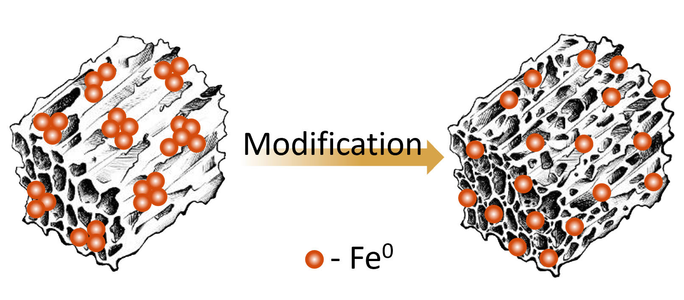

nZVI-Biochar Used in Heavy Metal Removal
Biochar matrix | Nanoscale zero-valent iron | Heavy metal removal
Overview
This project focuses on the development of nanoscale zero-valent iron modified biochar composites for heavy metal removal from water. Biochar provides a porous and sustainable carbon matrix that can support iron-based reactive particles, improve particle dispersion, and enhance the accessibility of active sites for contaminant removal.
The project investigates how biochar properties, iron loading, and thermal treatment conditions influence the formation, size, distribution, and phase structure of iron-based particles within the biochar matrix. Through material characterization and adsorption experiments, this work aims to better understand the relationship between biochar structure, nZVI formation, and heavy metal removal performance. The outcomes of this project support the development of sustainable, biomass-derived adsorbents for water remediation, with potential applications in improving heavy metal removal efficiency, iron utilization, and environmental treatment technologies.
Funding
- USDA Forest Service Forest Products Laboratory – Project: Biochar applications in heavy metal removal from water.
Representative Images
